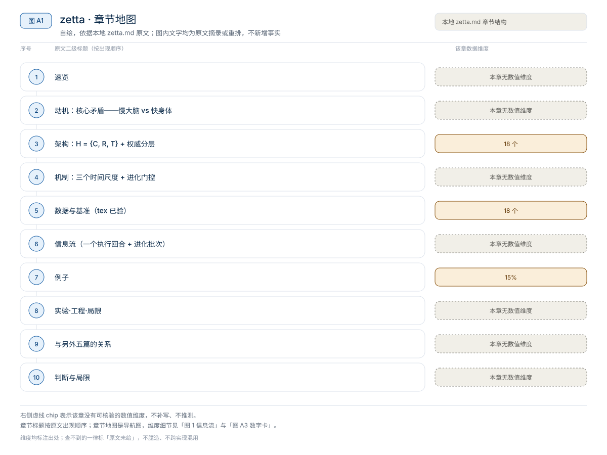
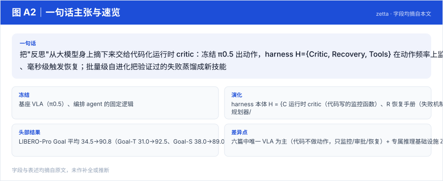
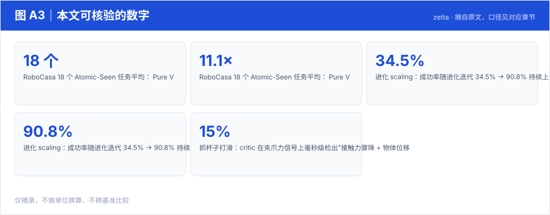
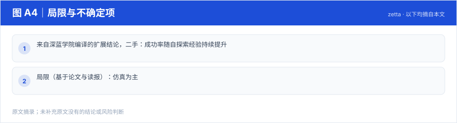

【Harness VLA · 代码即策略与技能发现】RAX 深读：把在线探索做成 Scaling Law，五大基准平均领先 37.4 个点
冻结通用 coding agent 直接连机器人感知/控制接口，把"在线探索"做成 scaling law：成功决策编译成程序、版本化入库，能力随探索预算单调增长
Harness01-代码即策略与技能发现2026
把"反思"从大模型身上摘下来交给代码化运行时 critic：冻结 π0.5 出动作，harness H={Critic, Recovery, Tools} 在动作频率上监控执行、毫秒级触发恢复；批量级自进化把验证过的失败蒸馏成新技能
原题与资源：Zetta ζ: An Efficient Closed-Loop Embodied Harness for Self-Evolving Physical Intelligence · arXiv:2608.16590 · 代码
一句话：把"反思"从大模型身上摘下来交给代码化运行时 critic：冻结 π0.5 出动作，harness H={Critic, Recovery, Tools} 在动作频率上监控执行、毫秒级触发恢复；批量级自进化把验证过的失败蒸馏成新技能
阅读成本：正文约 2986 字 / 9 个章节 / 4 张图；目录按本文原有章节顺序排列，章节内容未改动。
目录（点击跳到对应章节）：

图 A1：本文章节地图（节点即原文 h2 标题）。自绘，依据本文，不新增事实。
| 项 | 内容 |
|---|---|
| 一句话 | 把"反思"从大模型身上摘下来交给代码化运行时 critic：冻结 π0.5 出动作，harness H={Critic, Recovery, Tools} 在动作频率上监控执行、毫秒级触发恢复；批量级自进化把验证过的失败蒸馏成新技能 |
| 冻结 | 基座 VLA（π0.5）、编排 agent 的固定逻辑 |
| 演化 | harness 本体 H = {C 运行时 critic（代码写的监控函数）、R 恢复手册（失败机制→可执行策略）、T 异构工具集（规划器/抓取检测/恢复模块）} |
| 头部结果 | LIBERO-Pro Goal 平均 34.5→90.8（Goal-T 31.0→92.5、Goal-S 38.0→89.0）——六篇中对同一底座 VLA 的最大单点提升 |
| 差异点 | 六篇中唯一 VLA 为主（代码不做动作，只监控/审批/恢复）+ 专属推理基础设施 Z-Infra |

图 A2：一句话主张与速览字段。自绘，依据本文，不新增事实。

图 A3：本文可核验的数字摘录。自绘，依据本文，不新增事实。
一个具体任务走一遍 · 本文可核验数字与字段速查（以下均摘自原文，未作推算）：
| 组件 | 内容 |
|---|---|
| 运行时 Critic C | 代码写的监控函数，在动作频率上扫描执行轨迹（抓取力度、物体偏移…），输出结构化异常报告；无决策权 |
| 恢复手册 R | 失败机制 → 可执行恢复策略的映射（拉取/重抓/重定位…） |
| 工具集 T | 规划器、抓取检测、恢复模块等可执行程序 |
| 编排 Agent | 逻辑固定不变，当"审批人"：核实 critic 上报的证据后才批准触发恢复（authority hierarchy） |
质检员/班组长类比：质检员（critic）眼疾手快但只报警；是否停产（触发恢复、重入 VLA）由班组长（编排 agent）批——防误报滥用，又不失响应速度。
两道闸门：
| 指标（LIBERO-Pro，底座 π0.5） | 前 | 后 |
|---|---|---|
| Goal-T | 31.0 | 92.5 |
| Goal-S | 38.0 | 89.0 |
| Goal 平均 | 34.5 | 90.8 |
（来自深蓝学院编译的扩展结论，二手：成功率随自探索经验持续提升；学到的技能支持零样本迁移；出现"顿悟时刻"（Aha Moments）式的能力跳变。）
LIBERO-Pro（底座 π0.5，成功率 %）
| Setting | π0.5 | Zetta |
|---|---|---|
| Goal (T) | 31.0 | 92.5 |
| Goal (S) | 38.0 | 89.0 |
| LIBERO-10 (T) | 50.0 | 63.0 |
| LIBERO-10 (S) | 9.0 | 40.0 |
RoboCasa 18 个 Atomic-Seen 任务平均： Pure VLA (GR00T) 73.56 → Zetta 93.56（逐任务 50→100 级提升，如 T6 62→80、T15 50→100）。推理侧 11.1× 加速。
执行中（动作频率，毫秒级）：
π0.5 输出动作块 → critic 代码扫描（力/位姿/接触） → 异常？
├─ 否 → 继续执行
└─ 是 → 结构化报告 → 编排 agent 审批 → 恢复剧本执行
→ 失败证据清除 + 接触力平衡 → 控制权交还 π0.5（重入契约）
批次后（自进化）：
失败 rollout → EOD 聚类（最早分岔点）→ 自上而下归因
→ 提案新 critic 函数 / 恢复剧本 / 工具
→ held-out 回归验证 → 通过则更新 H抓杯子打滑：critic 在夹爪力信号上毫秒级检出"接触力骤降 + 物体位移"，报告"grasp force insufficient"；编排 agent 核实后不重跑 VLA，而是执行恢复剧本"退 2cm → 张开 15% → 重新闭合抓取"；力平衡后才让 π0.5 继续放置。该失败机制随后被蒸馏成 R 里的一条新剧本，同类场景永久免疫。
本文判断：押注：在线判定交给代码（够快），LLM 只做低频裁决与离线进化
局限与不确定项（以下均摘自本文，未作推断）：

图 A4：局限与不确定项摘录。自绘，依据本文，不新增事实。
覆盖范围：本页新增的导读、目录、章节地图、数字卡与局限清单，均为原文信息的重排或摘录；正文、数据与实验结论未改动。